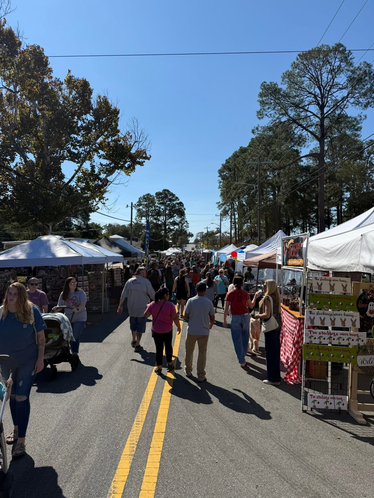
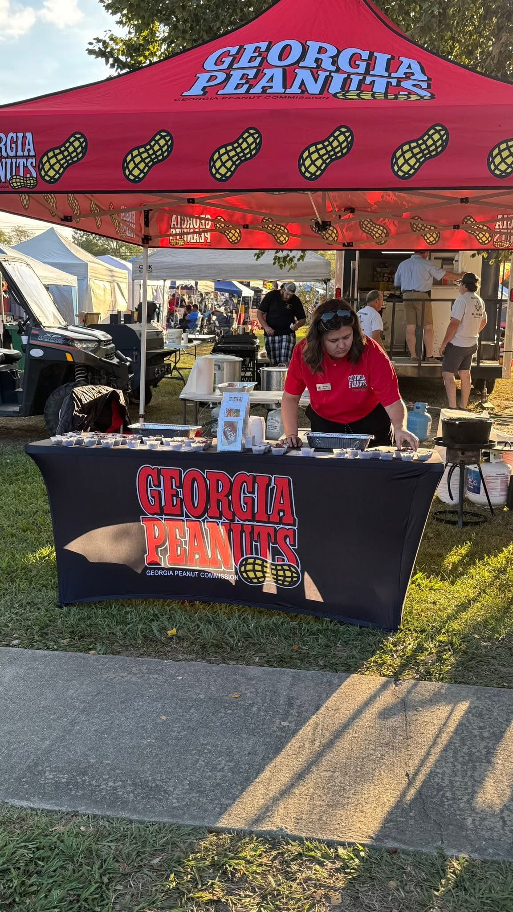
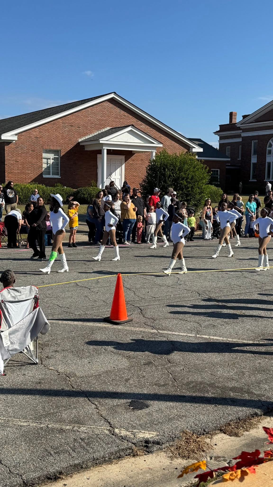

October 18, 2025 · Sylvester, GA

Southern food, fun & entertainment — celebrating the Peanut Capital of the World!

Southern food, fun & entertainment — celebrating the Peanut Capital of the World!
The Annual Georgia Peanut Festival is both a celebration and a "THANK YOU" to our community and most importantly, our local farmers. Held at T.C. Jeffords Park near downtown Sylvester, GA, on the 3rd Saturday of every October!
Activities include one of the largest parades in the Southeast, craftsmen from all over the state, and peanut treats to delight everyone in the family.
Read our full story

Something for everyone — from parades to pageants
Come celebrate with us at the Peanut Capital of the World. Admission is free!
Plan Your Visit